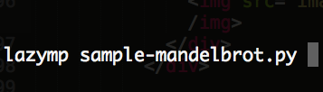
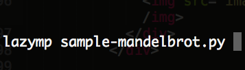

Summary
We developed Lazymp, a python-to-python translator, which supports OpenMP [2] style annotation to make sequential code run in parallel. User can utilize mutiple cores with least effort to run code faster!
According to our experiment, we show that LazyMP can provide N/2x ~ Nx speedup comparing to sequential code.
Add Syntax
LazyMP's syntax style is inspired by OpenMP: user just needs to add annotations on the block to be parallelized. (1) Add "#pragma omp parallel for" nearby the for-loop to run the loop in parallel, and (2) add "#pragma shared" to indicate which variable is shared among processes.
LazyMP It!
Enter "lazymp code.py", and then Lazymp will translate your code into parallized code and run it in parallel.
 

Openmp uses multi-thread for parallelism. However, LazyMP is based on multi-process. Why do we choose process based parallelism?
There are some other possible options:
Thread parallelism Native Python thread requires GIL before running. So only a single thread can be active at a time in the Python interpreter.
Cython extension Cython [3] helps to add C extensions in Python program. So programmers can potentially use C thread lib for parallelism. Although it’s a feasible way, it requires programmers learn Cython, and C language. And the program tends to be complicated when Cython is used. What is worse, programmer may need to refactor all existing code if he want to add parallelism.
So process based solution is a reasonable choice. According to our experiment, Python processes can parallel the program in multiple-core host. It meets our need.
However, there are 2 problems for using process based approach.
1. Process is heavier than thread. So overhead of using process is higher.
2. Processes share nothing. So it would be hard to share data between parallel instances. For example, reading data in the parallel part requires data to be dispatched to the processes. Writing data in the parallel part will need a collecting phase, so that the following sequential part can see changes.
Despite the overheads and limitations, process based methods makes true parallelism in Python possible. The performance of the program increases with multiple process execution. LazyMP hides multiprocess detail. And it also tries to reduce the overheads.
We built a translator to detect the "#pragma omp parallel for" and "#pragma shared", replace the original block with defined parallized patterns.
#pragma omp parallel for
When LazyMP translator detects "#pragema omp parallel for", it generates a core function to wrap the code inside the for-loop. Then, it attaches "ProcessPool({num_proecess}).map({iterator})" below the core function.
ProcessPool({num_proecess}).map({iterator}) will launch a process pool, collect the values in iterator, and dispatch a job (a core function and a value from iterator) to run the block in parallel.

#pragma shared
When "#pragma shared" is detected, LazyMP translator will use "multiprocess.Manager" to generate a shared proxy variable for the original variable, and redirect all the variable operations to the proxy variable.
"multiprocess.Manager" launches a process for shared variable operations and return a proxies for worker processes to accesss the shared variable.
After all operations finish, LazyMP translator adds a code to copy the data back from the proxy variable to the original variable.

#pragma shared reduce
LazyMP provides another syntax to indicate shared variables: "#pragma shared reduce".
Instead of using "multiprocess.Manager" to provide shared variable process, "#pragma shared reduce" lets each process access it's local variable first, and then reduces them after for-loop finishes.
LazyMP translator first adds __shared__ dictionary into core function. The operations related to the shared variable will be redirect to the __shared__ variable, and the core function will return __shared__ variable finally. LazyMP will add a block of code to reduce __shared__ variables into the original varible.
This approach can reduce synchronization overhead, because the processes does not truly shared variables.

with Atomic
Like OpenMP uses "atomic{}" closure to limit only one thread can access critical section, LazyMP provides Atomic context to let only one process can access the code in the specific block.
User needs to import Atomic class from lazymp library. Atomic is context class but do nothing. It is just a anchor point for LazyMP to detect.
When LazyMP detects Atomic class, it will use "multiprocess.Manager" to provide a lock. Only the process with the lock can access the critical section.

CPU intensive tasks
We first test LazyMP with two CPU intensive tasks: busyloop and mandelbrot [1]. These type of tasks consume CPU computation rather than memory fetching. We can examine LazyMP performance without worring other factors(e.g., memory bandwidth, disk I/O, network I/O) with these tasks.
BusyLoop runs i++ 500 times inside a for-loop. i is a local variable, so does not have any synchronization requirment.
Mandelbrot is invested by Pierre Fatou and Gaston Julia. It also requires much CPU comutation but less memory communication. In our test, we compute 1000 * 1000 mandelbrot graph.
According the experiment result, LazyMP can provide 5x~6x speedup in both cases.


Grep a single big file

A typical use case of processing a big file is grep. We write a test script that scans large file for any lines that contain the input word.
Naive version of this script will read each line in the file and do a search in these lines. In order to use LazyMP, the script is modified to strips the whole file into small block areas before scan. Then it checks each block in a for loop. The loop itself will not cause computing overhead. But it enables adding LazyMP annotation. So LazyMP will create process for each block area and scan the lines in these block in parallel.
We used a 2GB text file for testing the script. The speedup is shown above. As we increase the process number, the speedup could be up to 5x in a 6 core server.
Of cause, in this case, the performance of the script is also affected by the size of block. Big size blocks reduce parallelism, small size blocks increase management overhead. The result we show in this report uses an optimized block size according to our experiment.
Grep various files

Another typical use case is processing a large amount of files. For example, scan in the log folder. The scan script can potentially check every log files in parallel. But programmer usually do it in a loop for quick development. Now they just add LazyMP annotation after the for loop.
In this example, we do grep on more than 600 files, each with size around 5MB. The script checks all files (or the files in subdirectories) for lines that contain the input word. Each file is processed in a separate process by LazyMP. The result is shown above.
We notice the speedup is even better than the processing single file example. When the script is parallelized according to files, there is no overhead for striping the input.
Besides performance, this test also verifies LazyMP can handle nested loop. As long as the system has resource for new process fork, the nested loop can be handled in parallel as well.
Synchronization Tests
Previous tests don’t need synchronization. However, it’s a common requirement for parallel program. For example, if we want to do word count in multiple files, the count has to be synchronously updated. In LazyMP, there are 2 ways for this task. First option is using atomic method. Second option is using “shared union” annotation on the variables.
We tested these 2 methods using a word count script on 116 small text files. Every process scan a single file.
For using the atomic method in this script, the developer has to specify which block in the code would update the count. Then LazyMP will ensure atomicity by using lock. The result shows that lock causes a lot of overheads and the performance is actually decrease when using LazyMP version.
For using the “shared union” method, the developer needs to add annotation on the word count dict. Then LazyMP will help to aggregate the result. The result shows that when there are too many items in the dict, script performance will decrease.
Although these 2 methods can ensure the correctness, we think developers should not use LazyMP in the programs that have high synchronization requirement.